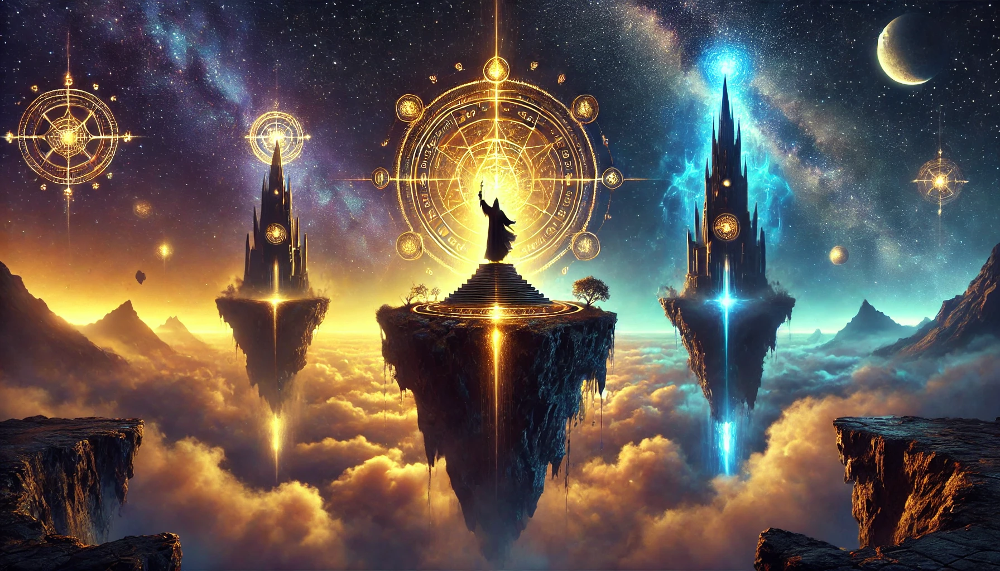

O Reino das Sombras Luminosas
Um antigo reino, perdido entre luzes e trevas, esconde segredos capazes de alterar o destino do mundo. Apenas os mais corajosos podem atravessar os perigos e descobrir o poder oculto. Você aceitará o desafio?
Você descobre um mapa misterioso empoeirado em um baú antigo. Ele aponta para dois locais: uma torre mágica esquecida e uma montanha envolta em neblina. Onde você começará sua busca?
Na Torre Mágica, livros antigos flutuam ao seu redor, e um deles sussurra segredos sobre um amuleto perdido. O que você faz?
A Montanha Enevoada é cheia de eco e assombrações. Entre as rochas, você encontra uma entrada para uma caverna que parece pulsar com energia mágica. O que fazer?
Ao procurar o amuleto, você enfrenta uma sombra que tenta roubar sua coragem. Apenas respondendo corretamente a uma charada você poderá continuar.
Ao sair da torre, você sente que abandonou uma oportunidade única. O destino do Reino das Sombras Luminosas permanece um mistério para você.
A caverna contém inscrições que apontam para uma conexão entre a torre e uma ilha flutuante nos céus.
Explorando a montanha, você encontra um guardião que oferece uma escolha: coragem ou sabedoria. Qual você escolhe?
Após resolver a charada, o caminho para a ilha flutuante se revela. Lá, o destino do Reino espera por você.
A escolha da coragem lhe dá força, mas também atrai inimigos. Você terá que lutar para continuar sua jornada.
A sabedoria lhe dá uma visão clara: a verdadeira chave para salvar o Reino das Sombras Luminosas está no equilíbrio entre luz e escuridão.
Na ilha flutuante, você enfrenta o desafio final: provar que é digno de restaurar o equilíbrio entre luz e trevas. Após vencer, você se torna o guardião do Reino das Sombras Luminosas.
